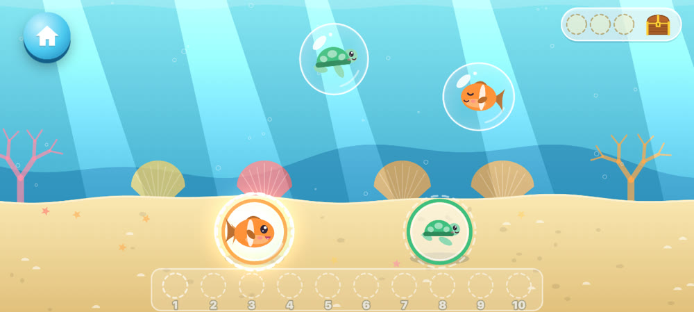
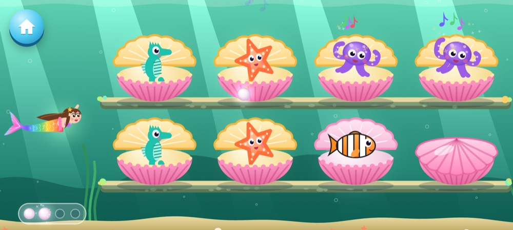
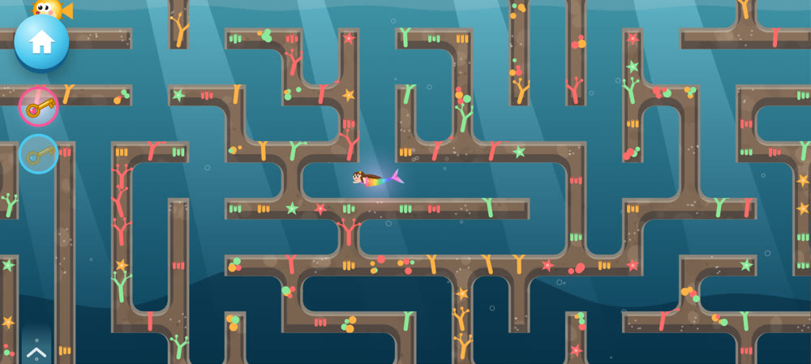
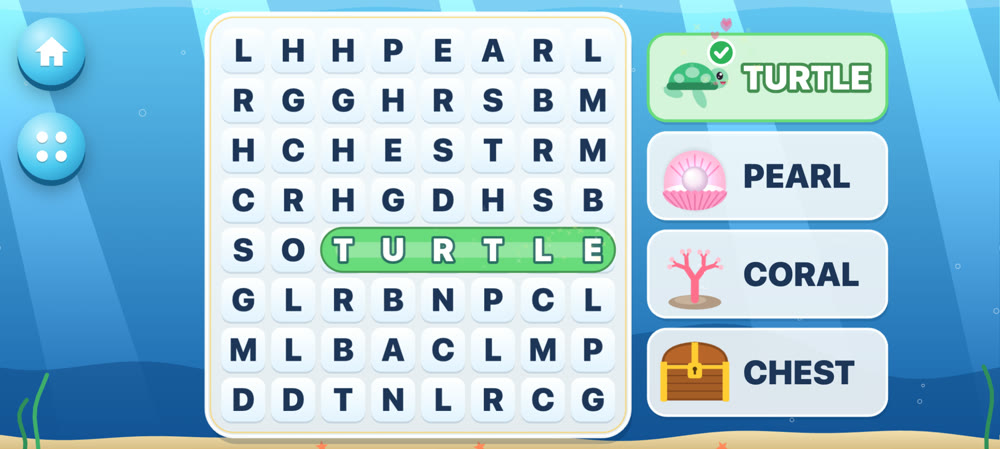
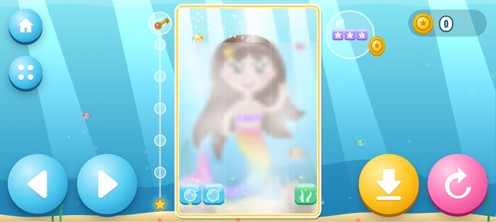
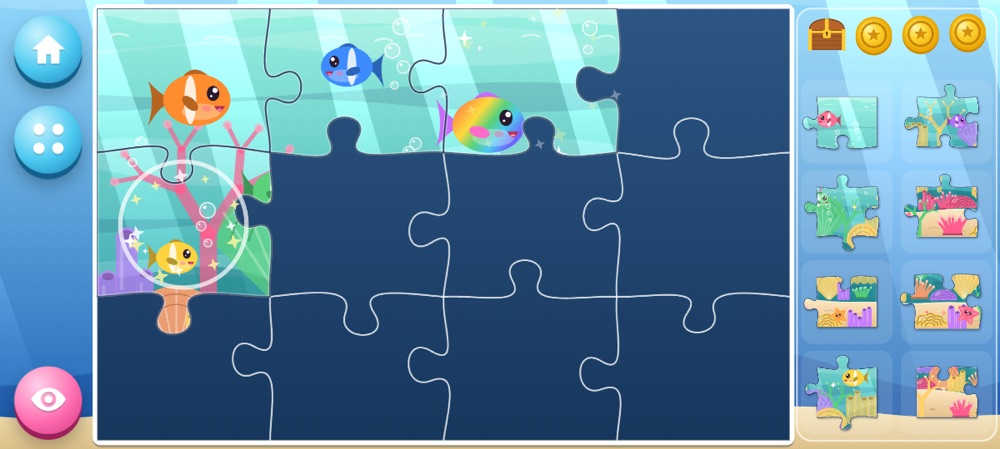
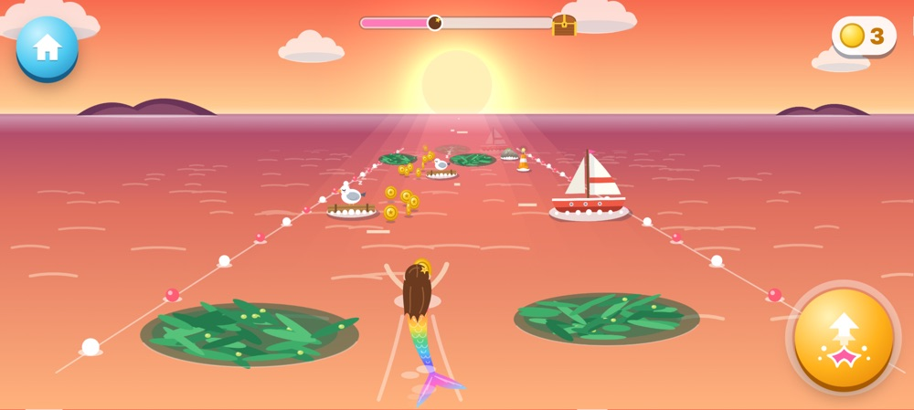
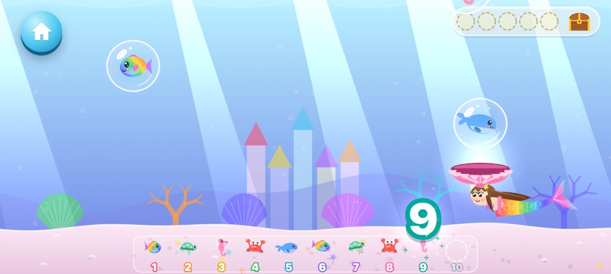

Nine games

Bubble Party 3–5
Drag each sea creature's bubble home to its picture on the sand. Ten saved make a coin, and every level ends in a treasure chest. Leave the grumpy ones be!
Isabella the Mermaid 5–8
Swim through 20 levels, find the key and open the treasure chest. Ten levels are free.

Shell Match 5–8
A memory game with clam shells, from 2 to 10 pairs, with stars for fewer mistakes.

Coral Maze 5–8+
Help Isabella swim out of coral mazes. Twenty Easy levels, then twenty big Hard ones with keys, gates, currents and dark water.

Sea Words 5–8
A picture word search: find TURTLE, PEARL or CHEST by drawing a line. Easy, medium and hard, and a new puzzle every time.

Treasure Blocks 5–8+
Slide and turn the sinking sea blocks to fill a row. Every row cleared pays a coin and lifts the mist from a picture of Isabella. Easy, medium and hard, and Easy never ends.

Sea Jigsaw 3–8
Thirty sea pictures cut into real jigsaw pieces, from 4 pieces up to 40. Drag a piece near its place and it snaps home. No piece can be lost.

Splash Dash 5–8
Tilt the phone to steer Isabella along the surface, past rocks, kelp and boats, to the treasure chest. Twenty courses, and a button to go faster.

Sea Catch 3–8
Slide Isabella left and right to catch the falling sea friends in her shell, and dodge the grumps. Ten levels, and none of them can be failed.
Unlock everything, your way
Eight of the nine games are free from start to finish, and so are the first ten levels of Isabella the Mermaid. The only thing to unlock is her second world, levels 11 to 20. A grown-up unlocks it behind a parent gate (press and hold, then a quick multiplication), so children never see a wallet or a payment.
Stake 1 SOL, get it back any time
Your SOL stays yours, as a token in your own wallet.
- You deposit about 1.01 SOL into the Isabella Ocean stake pool and receive about 1 OCEAN token per SOL.
- The staking rewards that SOL earns (about 5% a year) pay for the games. That is the only cost.
- Take your SOL back whenever you like: instantly for a 0.3% fee, or free in about 2 days.
- The extra levels lock again when the tokens leave your wallet.
- Your SOL's value still moves with SOL's price.
Or pay once
US$4.99, one time, with no subscription.
- Pay with SOL, USDC or another token your wallet holds; it is converted to the exact price.
- You see the exact amount in your wallet before you approve.
- A paid unlock never expires, and comes back if you reinstall with the same wallet.
Isabella Ocean is currently in testing on Solana's devnet, a test network where tokens have no value. Prices and terms on this page describe how it works at launch.
Made for parents' peace of mind
Nothing to collect
No accounts, names, emails, ads or analytics. Game progress lives on the phone.
Kids can't pay
Every wallet action sits behind a parent gate, and the Seeker's own wallet asks for a fingerprint or double-tap too.
Calm by design
No pop-ups, no countdowns, no nagging. The youngest games have no way to lose.